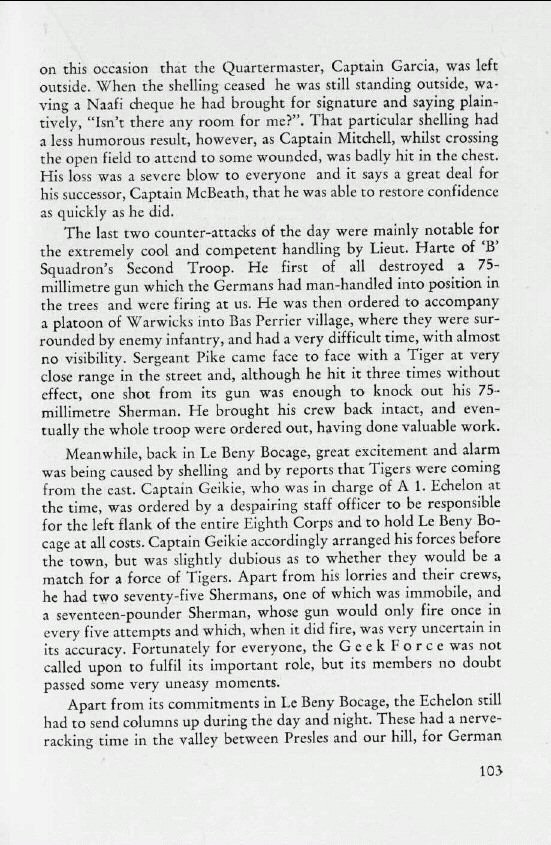

You are here:
Home
>
The Story of the Twenty-Third Hussars
> Page 103
< Prev
Next >

Men
Judah Garcia
George Patrick Mitchell
J.H. McBeath
Thomas Edward Harte
Douglas John Pike
Ian Somerville Geikie
Locations
Le Bas Perrier
Le Beny Bocage
Presles
< Prev
Next >